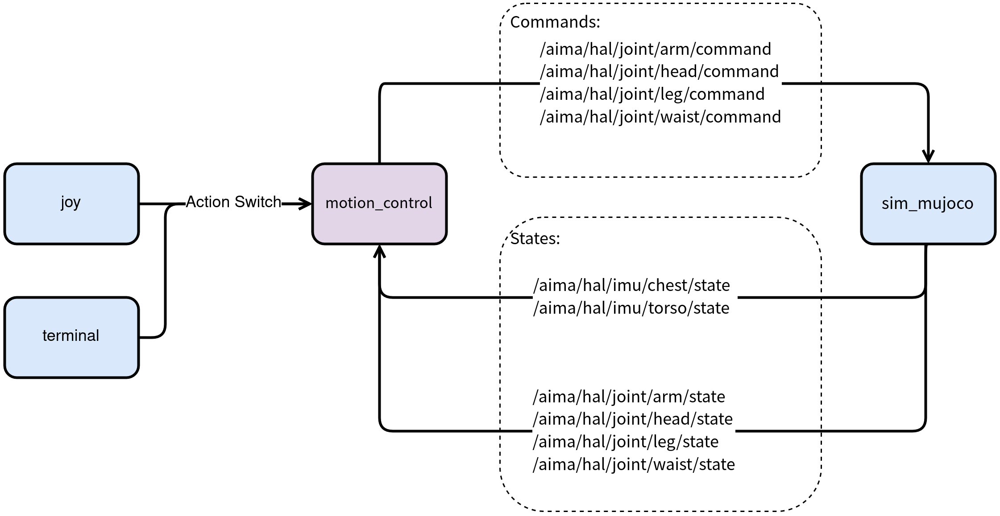

1 Prerequisites
# This project requires ROS2 Humble. If not installed, refer to:
# wget http://fishros.com/install -O fishros && chmod +x ./fishros && ./fishros
sudo apt install libgflags-dev
sudo apt install libyaml-cpp-dev
# The following packages require ROS2 Humble on the host machine
sudo apt install ros-humble-joy
sudo apt install ros-humble-grid-map-msgs
sudo apt install ros-humble-grid-map-ros
sudo apt install ros-humble-rmw-cyclonedds-cpp
# Download onnxruntime
# Reference: https://github.com/microsoft/onnxruntime/releases/download/v1.23.2/onnxruntime-linux-x64-1.23.2.tgz
# 1. Extract the archive
tar -zxvf onnxruntime-linux-x64-1.23.2.tgz
# 2. Copy headers to system directory
sudo mkdir -p /usr/local/include/onnxruntime
sudo cp -r onnxruntime-linux-x64-1.23.2/include/* /usr/local/include/onnxruntime/
# 3. Copy libraries to system directory
sudo cp -r onnxruntime-linux-x64-1.23.2/lib/* /usr/local/lib/
sudo mkdir -p /usr/local/lib64
sudo cp -r onnxruntime-linux-x64-1.23.2/lib/* /usr/local/lib64/
# 4. Update dynamic library cache
sudo ldconfig
2 Quick Start
2.1 Launch the motion-control example node
Enter the project directory
cd x2_rl_deploy
Build the project
colcon build
Source the environment
source /opt/ros/humble/setup.bash
source install/local_setup.bash
Run the motion-control example
ros2 run x2_rl_deploy_controller x2_rl_deploy_controller
2.2 Launch the simulation node
Enter the project directory
cd x2_rl_deploy/x2_rl_deploy_mujoco
Source the environment
source /opt/ros/humble/setup.bash
source ../install/local_setup.bash
Run the simulation environment
cd bin
./start_sim.sh -s
Select 0: lx2501_3_t2d5 at the command-line prompt.
2.3 Launch the gamepad node
Before running the command below, connect your PS5 controller to the host machine with a USB-C cable.
Start the gamepad node
source /opt/ros/humble/setup.bash
ros2 run joy joy_node
Run the RL model example
After all three nodes (RL deployment example, simulation, and gamepad) are running, you can use the RL model example:
Switch to position-control mode (optional)
After adjusting the robot pose, press 🟥 on the PS5 controller to enter the RL deployment mode example.
Press ⭕️ to enter damping mode when finished.
How to adjust the robot pose in simulation:
[Recommended] Press
Backspaceto reset the robot’s position in MuJoCo.Double-click to select a target joint, then use
Ctrl + left-clickto rotate it.Double-click to select a target joint, then use
Ctrl + right-clickto drag it.
2.4 Button Mapping
❌ - PASSIVE_DEFAULT (zero-torque mode)
⭕️ - DAMPING_DEFAULT (damping mode)
🔺 - JOINT_DEFAULT (position-control mode)
🟥 - RL_DEFAULT (RL deployment mode example)
Zero-torque modeis the default mode.Damping modeis the safe mode.It is recommended to switch to
position-control modebefore enteringRL deployment mode example.
3 Directory Structure
x2_rl_deploy
├── aimdk_msgs/ # Custom message package
│ ├── CMakeLists.txt
│ ├── interface/
│ └── package.xml
├── format.sh
├── rl_deploy_topology.png
├── README.md # This file
├── x2_rl_deploy_controller/
│ ├── CMakeLists.txt
│ ├── config/ # Configuration directory
│ │ ├── motion_control.yaml # Motion control config (initial pose and RL example settings)
│ │ └── rl_model/ # ONNX model file directory
│ ├── include/
│ │ └── x2_rl_deploy_controller/
│ ├── package.xml
│ └── src/ # Source directory
│ ├── main.cc # Entry point
│ ├── motion_control_node.cc # Motion control node
│ └── predictor/ # ONNX inference engine
└── x2_rl_deploy_mujoco/
├── bin/ # Simulation executable directory
├── COLCON_IGNORE
├── configuration/ # MuJoCo configuration files
├── lib/
└── version.json # Version info
4 Model Deployment
In the following,
<model_name>.onnxrefers to your model file.Before running, copy your trained ONNX model file to
x2_rl_deploy_controller/config/rl_modeland update the path inx2_rl_deploy_controller/config/motion_control.yaml.
rl_config:
policy:
type: "onnx"
device: "cpu"
path: "x2_rl_deploy_controller/config/rl_model/<model_name>.onnx"
Adapt the code to your policy
# Customize the RlDefault() function as needed to adapt your policy
x2_rl_deploy_controller/src/motion_control_node.cc
5 Communication Protocol
5.1 Communication Topology

5.2 Joint State Subscription Topics
Joint |
Publisher |
Subscription |
Topic name |
Data type |
Frequency (Hz) |
|---|---|---|---|---|---|
Arm |
hal_ethercat |
mc |
|
|
1000 |
Waist |
hal_ethercat |
mc |
|
|
1000 |
Leg |
hal_ethercat |
mc |
|
|
1000 |
Head |
hal_ethercat |
mc |
|
|
1000 |
5.3 IMU State Subscription Topics
Joint |
Publisher |
Subscription |
Topic name |
Data type |
Frequency (Hz) |
|---|---|---|---|---|---|
Chest |
hal_imu |
mc |
|
|
500 |
Pelvis |
hal_imu |
mc |
|
|
500 |
5.4 Control Command Publication Topics
Joint |
Publisher |
Subscription |
Topic name |
Data type |
Frequency (Hz) |
|---|---|---|---|---|---|
Arm |
mc |
hal_ethercat |
|
|
500 |
Waist |
mc |
hal_ethercat |
|
|
500 |
Leg |
mc |
hal_ethercat |
|
|
500 |
Head |
mc |
hal_ethercat |
|
|
500 |